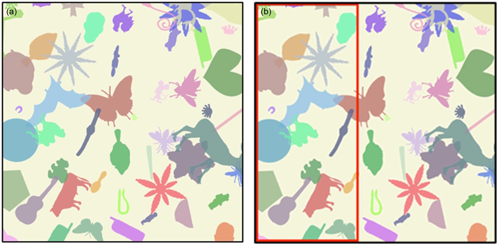
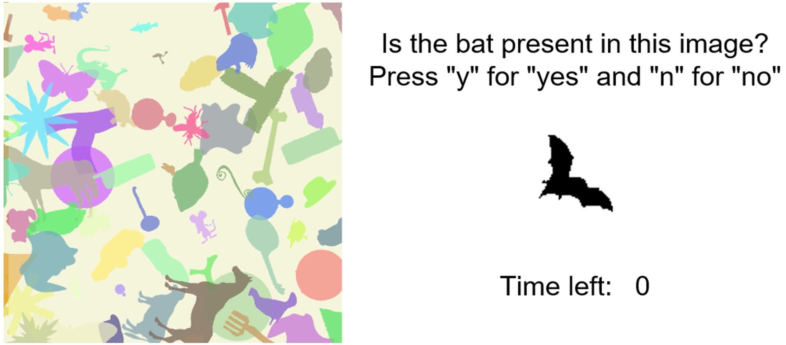
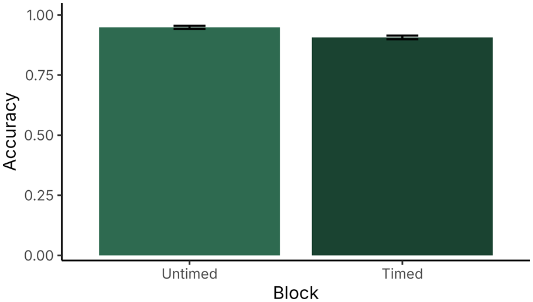
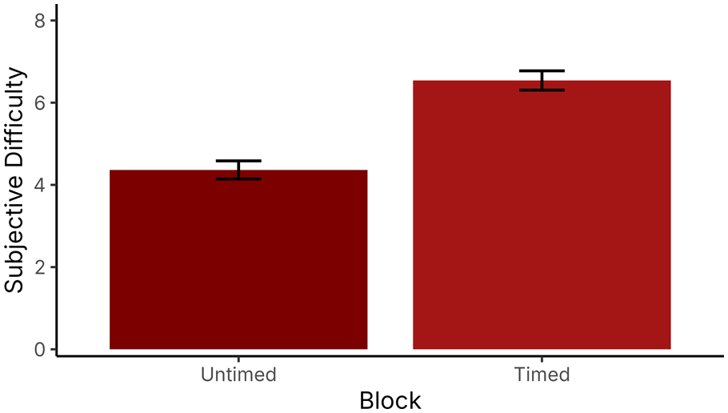
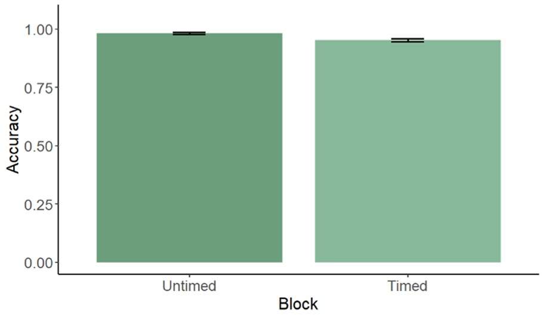
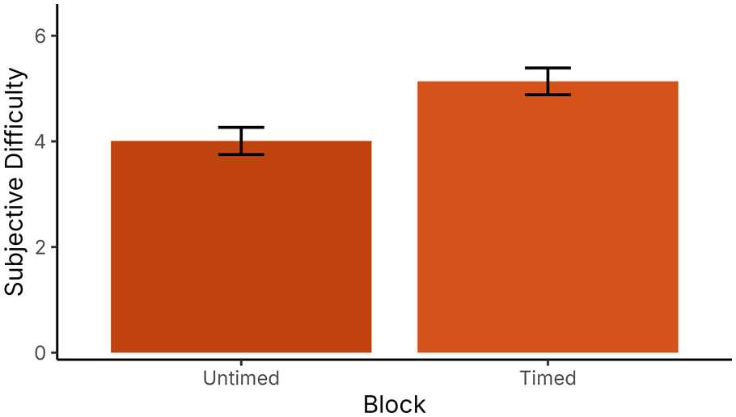
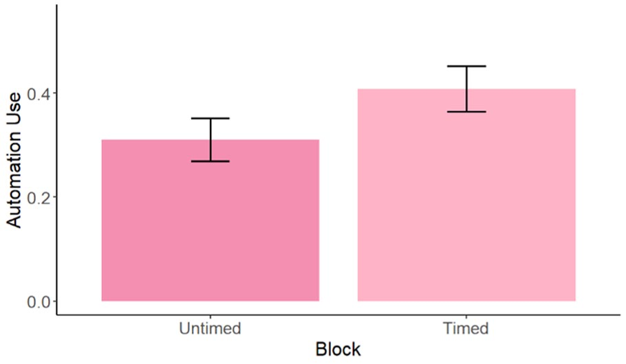

Time Pressure and Automation Use
CHAT Lab · Human Factors and Applied Cognition, NC State University
When a task starts to feel harder, do people turn to the automation that could help them?
The why
More and more often, people get to decide whether to turn an automated tool on at all: a driver choosing to open GPS, someone deciding to ask ChatGPT, a doctor choosing to record a visit with transcription software. Researchers call this discretionary automation. A recurring problem is that even when a system is reliable and the task is hard, people don't use it as often as they should, and their performance suffers for it.
One explanation is that people's perceptions are off. They may misjudge how hard a task is, how good the system is, or how well they're doing on their own. In our earlier study, we made a visual search task harder by adding clutter. People used the automated aid more on the harder trials, but the clutter changed both how hard the task felt and how hard it actually was, so we couldn't tell which one was driving the decision.
This study tried to pull those two apart. We used time pressure to make the task feel harder without making it harder, expecting people to rate the timed trials as more difficult, perform just as well, and use the automation more.
What we did
Seventy undergraduate students (61 in the final analysis) searched cluttered images for a small bat and pressed a key to say whether it was there. An automated aid was sometimes available: a red box outlining the third of the image that contained the bat, or the whole image when the bat was absent. The aid was 100% accurate, though participants were only told it was highly accurate. It started off on every trial, and participants could turn it on with an on-screen button.

Everyone started without a time limit. We then set each person's time limit at 1.2 times their own average response time from those untimed trials, so the limit gave them slightly more time than they usually needed. Before the timed trials, participants saw a message like "In the last set of trials, it took you an average of XX.X seconds to respond. This time, you will have XX.X seconds to respond," and a countdown appeared beside each image.

Participants completed four blocks of 40 trials, in this order: untimed without the aid, untimed with the aid available, timed without the aid, and timed with the aid available. After each block, they rated how difficult it had been on a scale from 0 to 10.
What we found
Time pressure made the task feel harder, and it also made it harder
Without the aid, participants rated the timed trials as much harder than the untimed ones (6.54 versus 4.36 out of 10). Their accuracy also dropped, from 95% to 91%. They answered faster under the time limit, averaging 3.2 seconds instead of 5.2, even though the limit gave them more time than they'd been using. Just the idea of a deadline was enough to rush people, so time pressure changed how hard the task actually was, not only how hard it felt.


Having the aid available didn't erase the effect
Even when a perfectly accurate aid was one click away, the timed trials were still less accurate (95% versus 98%) and still rated as harder (5.14 versus 4.01). People were still rushing, but the deadline didn't stop them from taking the time to turn the aid on when they wanted it.


People used the aid a little more under pressure, but not enough
Participants turned the aid on for 41% of timed trials compared with 31% of untimed trials. The difference was in the direction we expected, but it wasn't statistically significant. The aid clearly helped when people used it: accuracy was higher on trials where it was on (97% versus 94%), and participants who used it were more accurate overall (98% versus 92%). The drop in performance under time pressure came from people choosing to leave the aid off, not from ignoring it once it was on.

Why it matters
Most research on time pressure and automation looks at dependence, meaning whether people follow a system's advice once it's in front of them. That work tends to find that pressure pushes people toward over-relying on automation. When people had to decide whether to turn the aid on in the first place, we saw the opposite: they under-used it, leaving a perfectly accurate tool off even when it would have helped.
That difference suggests the decision to engage automation and the decision to rely on it may work differently. It also raises a design idea: asking people to actively turn automation on, instead of having it on by default, might be one way to reduce automation bias. More broadly, people's choices about using automation don't seem to be driven only by getting the best possible performance, and understanding what else drives them is the next step.
Accuracy was high even without the aid, which limited how much room there was to see differences, and the sample was made up of undergraduate students. Future studies should use tasks with more room for performance to vary and include a wider range of participants.
My role
I was first author on this paper, which extended my earlier work on perceived difficulty by asking how time pressure shapes perceived difficulty, objective performance, and the choice to use automation. I analyzed accuracy, difficulty ratings, and automation use across conditions in R, wrote the paper, and revised it in response to peer review. I received the HFES Perception and Performance Technical Group Inclusive Excellence Award to present this work at ASPIRE 2026.
Read the full paper
Padilla, J. G., & Patton, C. E. (2026). The impact of time pressure on perceptions of difficulty in an automation-supported task. Proceedings of the Human Factors and Ergonomics Society Annual Meeting, 70(1).